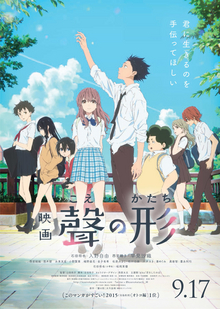

A Silent Voice (Japanese: 聲の形, Hepburn: Koe no Katachi, lit. 'The Shape of Voice') is a 2016 Japanese animated drama film produced by Kyoto Animation, directed by Naoko Yamada and written by Reiko Yoshida, featuring character designs by Futoshi Nishiya and music by Kensuke Ushio. It is based on the manga of the same name written and illustrated by Yoshitoki Ōima. Plans for an animated film adaptation were announced back in November 2014, Kyoto Animation was confirmed to produce the film in November 2016. Miyu Irino and Saori Hayami signed on as voice casting in May 2016 and the theatrical release poster and official trailer were released in July 2016.
The film covers elements of coming of age and psychological drama that deals with themes of bullying, disability, forgiveness, mental health, suicide, and platonic love where it follows the story with compassion and understanding involves the former bully turned social outcast, who decides to reconnect and befriend the deaf girl he had victimized years prior.
A Silent Voice premiered at Tokyo on August 24, 2016. It was released in Japan on September 17, 2016, and worldwide between February and June 2017. The film received highly positive reviews from critics, with praise going to the direction, animation, and the psychological complexity of the characters. It has grossed over $31.6 million worldwide. The film won the Japanese Movie Critics Awards for Best Animated Feature Film. While nominated for the Japan Academy Film Prize for Excellent Animation of the Year, as well the Mainichi Film Award for Best Animation Film, it lost to In This Corner of the World and Your Name, respectively.